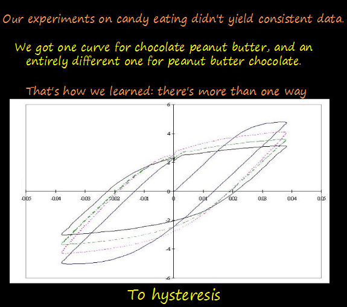

Comic JK 811
When I Feel Like It
⇤
<
?
>
⇥

⇤
<
?
>
⇥
Forum
.
RSS
.
Digg
.
Facebook
.
Reddit
.
Twitter
.
Stumbleupon
Enter your thoughts on number 811 here. Please, no spamming, trolling, phreaking, or hystereses. Your mother gave my dick hysteresis, in more than one way. Yay, I was targeted by a webcomic artist! And yay, an application of understanding hysteresis. (I'm a mining engineer, every application of hysteresis I know of just involves me going to the next office and talking to the resident electrical engineer) >yay mining engineering > Another target here. Except, you know, I'm a mechanical, so I build weapons - the CIVILS build targets. >>Yep, that's me... "generally nice" engineering... Reese's peanut butter cups are the best. Quite possibly because they are also almost the ONLY kind you ever ever see. The application of maths jokes could only improve them. >I like Reese's better than most confectioner's peanut butter cups. > Only the original size Reese's PBC is "best." the others get the PB:C ratio wrong. Though I admit I haven't tried the new extra-small non-wrapped variety. >> I like the pumpkins better. >>>The Easter egg kind are the best >>>>OK that's fair. Pumpkins were just fresher in my mind. The extra small non-wrapped ones are incredible. You can eat them about five times faster since you don't have to screw around with the paper cuppy or foil wrappy. Just open the bag and pound it back. It is totes the best. >and go great in ice-cream! >>How about cookies? Reese's Chip Cookies